MathDesk は、共通テストの数学（数学I・A・II・B・C）と、その前提になる中学・小学校の範囲を、先生役の AI と対話しながら学ぶアプリです。この記事では、スマホでログインしてから最初の授業で質問するまでを、6 つの手順と実際の画面で説明します。
画面は 2026-11-21 に、そのとき公開していた版（mathdesk-00332-doh）を、スマホと同じ幅で撮影したものです。撮影には試験用のアカウントを使い、画面の名前は「あおい」になっています。版が変わると、文言や配置が変わることがあります。
MathDesk でできること
- 先生に、数学の質問や「どこから始めればいいか」を文章で相談する
- 単元を目次や地図から選んで、授業を受ける
- 実力テストを受けて、採点結果と解説を見る
- 問題や答案の写真を送って相談する
- これまでの授業とテストを、あとから開き直す
授業の先生は AI なので、回答に誤りが含まれることがあります。画面の下にもその旨が表示されます。
始める前に用意するもの
- スマホのブラウザ（パソコンでも使えます）
- Google アカウント（ログインに使います）
MathDesk は招待制の無料βとして運営しています。現時点で利用料金はかかりません。招待されていないアカウントでは、利用の申請から始まります（手順 3）。
最初の画面から授業まで
1. 科目を選ぶ
MathDesk を開くと「科目を選ぶ」が表示されます。「数学」を押します。
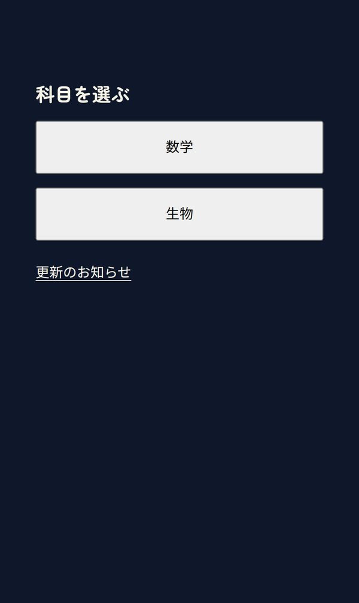
2. Google でログインする
「Googleでログイン」を押し、自分の Google アカウントを選びます。パスワードを MathDesk に登録する必要はありません。
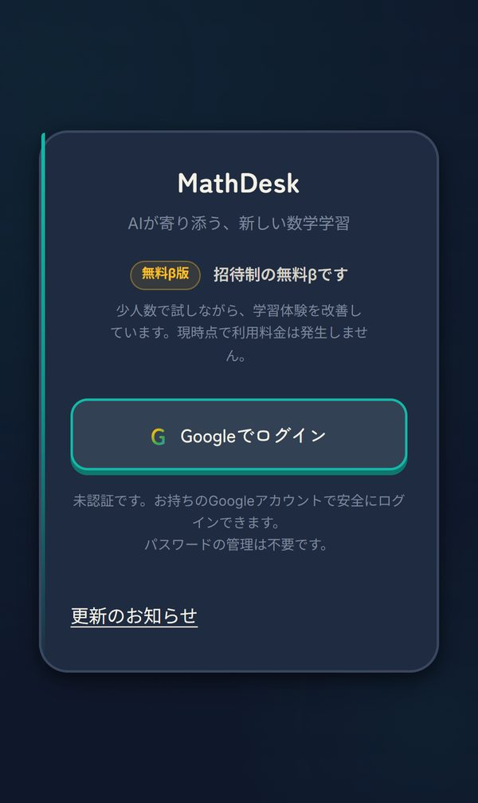
3. 招待されていない場合は、利用を申請する
まだ招待されていないアカウントでは「β利用を申請します」が表示されます。氏名（表示名）と、必要なら一言メッセージを書いて、「β利用を申請する」を押します。運営が承認したら、同じ画面の「再確認」を押すと先へ進めます。招待済みのアカウントでは、この画面は出ません。
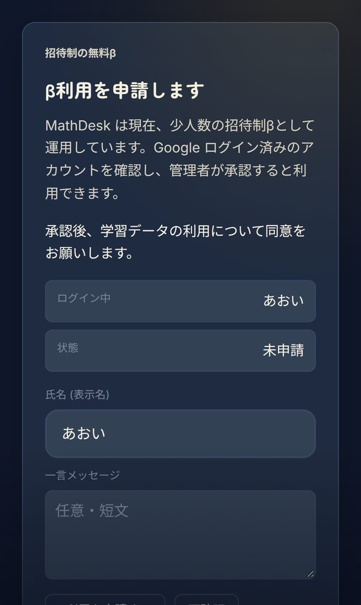
4. はじめの質問に答える
「はじめに少しだけ教えてください」と、3 つの質問が順に出ます。
- 名前（ニックネームでかまいません）
- 学年
- 数学についての今の感じと、学校で習い終えた科目（どちらも任意）
習い終えた科目は、最初の実力テストの範囲に使われます。選ばなくても始められ、あとから変更できます。最後に「完了」を押します。
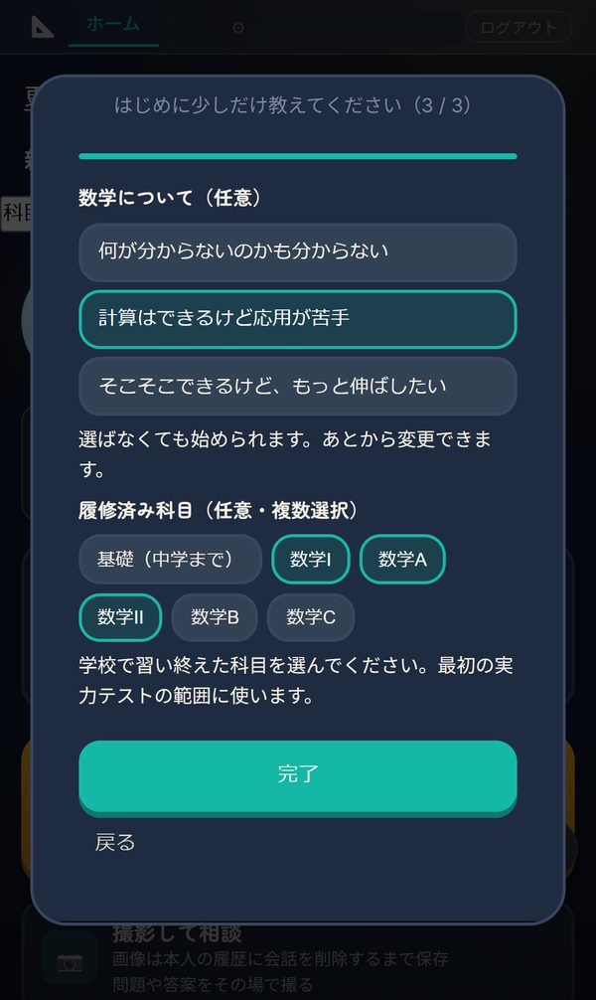
続いて「学習データの利用について」が表示されます。学習の記録と先生との会話を、学習体験の改善に使ってよいかを選びます。同意しない場合も、学習を続けるのに必要な会話履歴や学習記録はアプリに保存されます。あとから設定で変更できます。
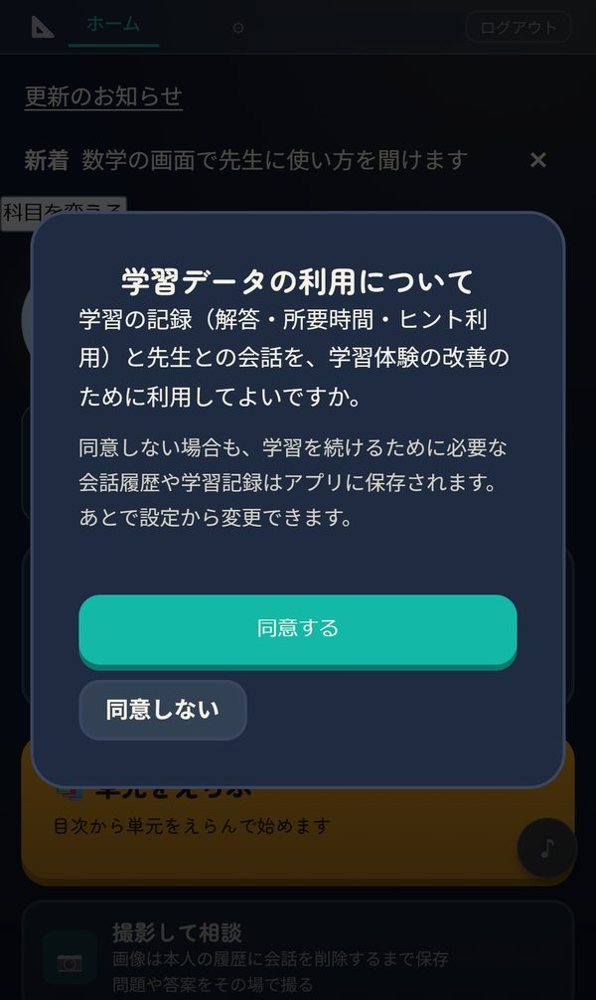
5. ホームでペンギン先生の案内を読む
ホームに、ペンギン先生と「こんにちは。数学や使い方で気になることは、ここから聞いてね。」という入力欄が表示されます。その下に、初めての人向けの案内が出ます。
- 「単元をえらぶ」で、目次や地図から授業を探せます。
- 「実力テスト」で受ける範囲を選べます。
- 問題を送るなら「写真で相談」。
- 授業やテストの見直しは「これまでの記録」。
読み終えたら「閉じる」を押します。閉じた案内は、同じ場所の「使い方」を押すともう一度表示されます。
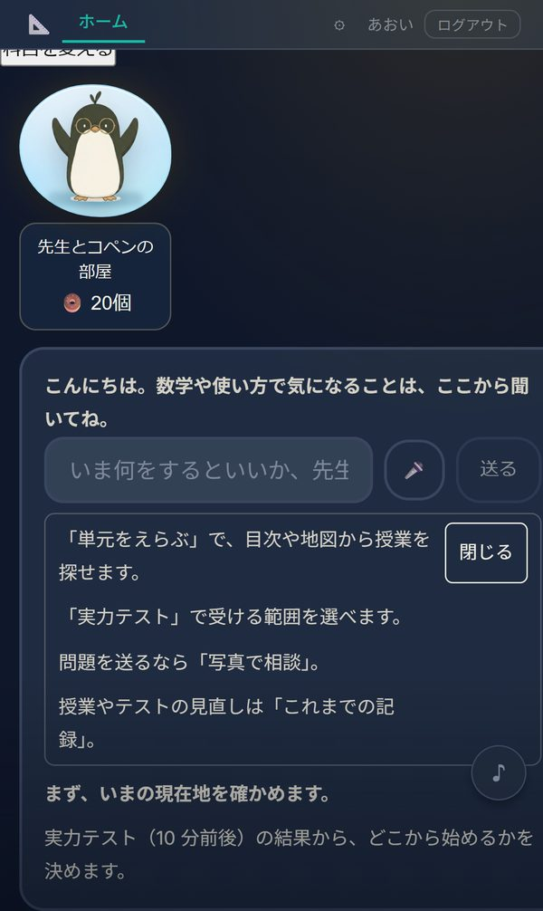
案内の下には、学年に合わせた実力テスト（10 分前後）の入口も表示されます。テストの結果から始める場所を決めることも、テストを受けずに授業から始めることもできます。
6. 授業を始めて、質問する
授業の始め方は 2 つあります。
先生に聞いて始める。ホームの入力欄に、困っていることや学びたいことを書いて「送る」を押します。撮影時は「数学IIの三角関数の加法定理から分からなくなりました。公式は覚えたけど、なぜそうなるのかを最初から知りたいです」と送りました。先生の返事のあとに「『加法定理』の授業を始めますか？」と表示され、そのボタンから授業に入れました。表示される単元は、書いた内容によって変わります。
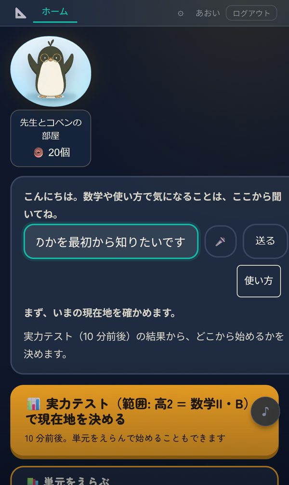
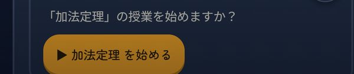
単元を選んで始める。ホームの「単元をえらぶ」を押すと、「学習の地図」が開きます。「目次」では科目、単元の順にすべての単元が並び、単元を押すとスキルが開きます。スキルのボタン（授業、続き、もう一度）を押すと、その授業が始まります。「地図」では、選んだ単元の前に学ぶ単元とあとに学べる単元を、上下に並べて表示します。
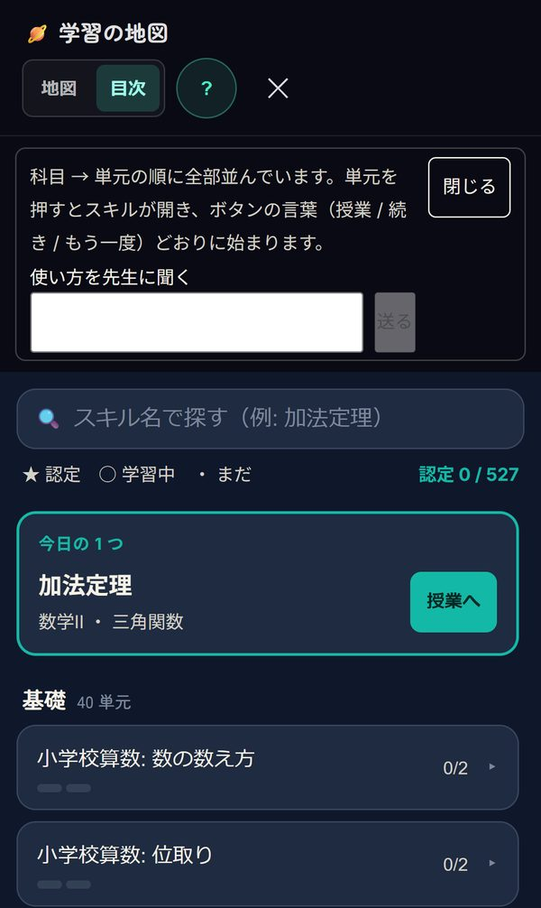
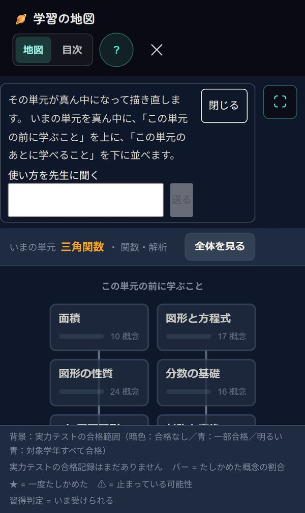
授業を開くと、上に授業の使い方が表示されます。分からないことは、画面下の「先生に質問する…」の欄に書いて送ります。問題が出たときは、問題のカードに答えを入力します。
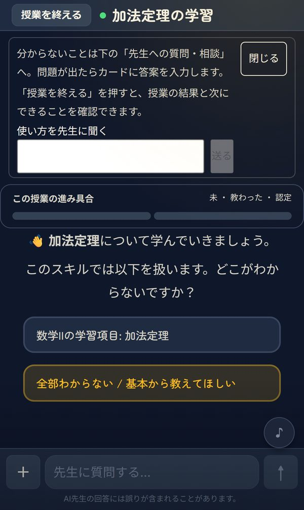
先生が返事を用意している間は、「応答を用意しています」「書いています」と表示されます。返事には数式や図が入ることがあります。分からない点が残れば、続けて質問できます。
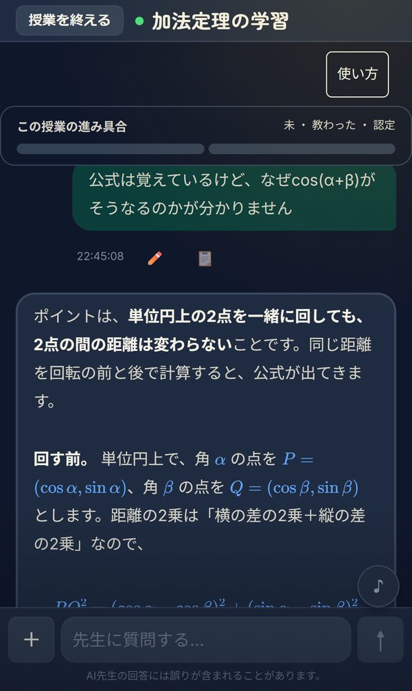
やめるときは、左上の「授業を終える」を押します。授業の結果と、次にできること（習得判定へ、地図で見る、この内容の学習を続ける、ホームへ）が表示されます。
あとから見直す
使い方をもう一度読む
ホームや授業、地図、テストの画面には、それぞれ使い方の案内があります。閉じたあとは、画面の「使い方」を押すと再表示されます。案内の中の「使い方を先生に聞く」に書くと、その画面の使い方を先生に質問できます。
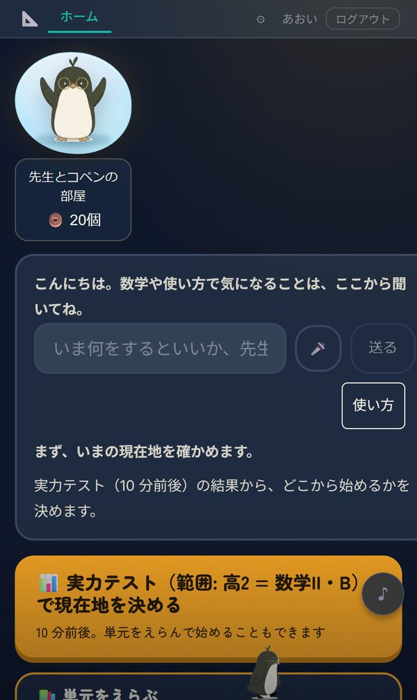
実力テストを受けて、結果を見直す
ホームの「実力テスト」を押し、受ける学年を選んで「テストを始める」を押します。各問題の欄に答えを入れ、最後に「提出する」を押すと採点されます。
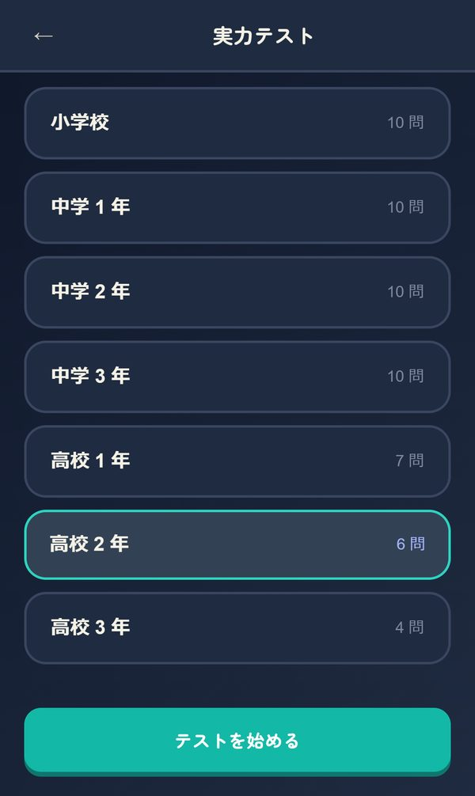
「テスト結果」に正解数と単元ごとの結果が表示されます。「間違えた N 問を見直す」を押すと、問題、自分の答え、正解、解説を順に確認できます。単元ごとの行から、その単元の授業へ進むこともできます。
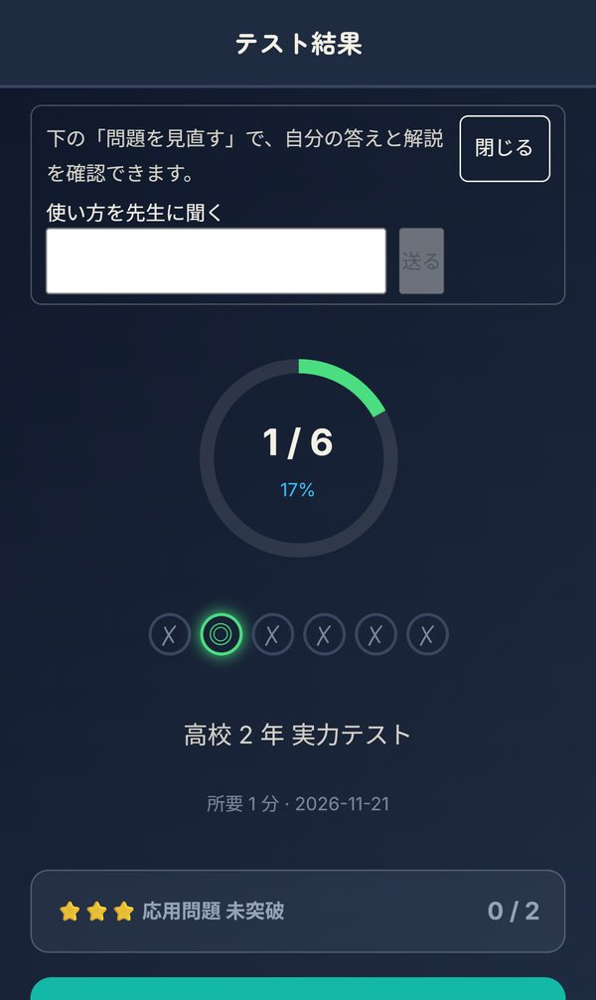
これまでの記録から戻る
ホームの「これまでの記録」には、「授業」と「テスト」のタブがあります。授業の記録を押すと、続きを再開したり、終えた授業を読み返したりできます。テストの記録の「結果・解説を見る」を押すと、採点済みの答案と解説をもう一度開けます。
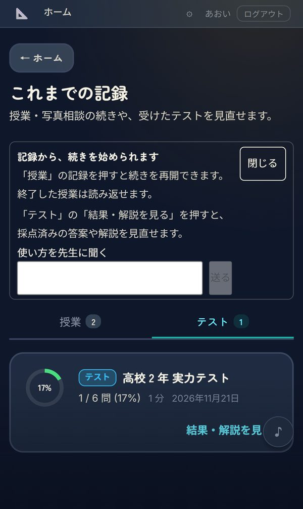